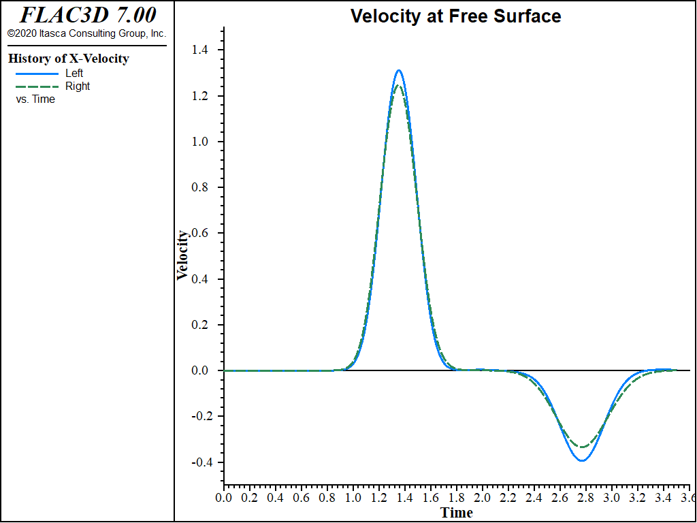

阻尼的空间变化
注意
要在 FLAC3D 中查看此项目，请使用菜单命令 。选择“Dynamic/Damping-SpatialVariation”并选择“Damping-SpatialVariation.f3prj”以加载。 该项目的主数据文件见本示例末尾（main data files）。其余数据文件可在项目中找到。
这是一个使用阻尼参数空间变化的示例，通过修改柱中传播的波（wave propagating in a column）示例来演示。在本示例中，构建两个独立的完全相同的网格，以便直接比较。两个网格均包含两层：下半部分为刚性层，上半部分为软层。左侧网格采用均匀的 Rayleigh 刚度阻尼，而右侧网格的阻尼系数有两个值，分别对应两种材料，尽管其平均阻尼系数与左侧网格相同。
两个网格自由表面的速度时程绘于 图 1（Figure 1）。可以观察到响应差异，尤其是在第二个脉冲中（该脉冲由材料不连续面反射而来）。


图 1：阻尼空间变化时自由表面的速度时程。
数据文件
Damping-SpatialVariation.dat
;---------------------------------------------------------------------
; 动力问题“阻尼的空间变化”所用脚本文件
;---------------------------------------------------------------------
model new
model large-strain off
fish automatic-create off
model title 'Spatial variation in damping'
model config dynamic
; 创建两列网格单元以作比较
zone create brick size 1,1,50 group 'Left'
zone create brick size 1,1,50 point 0 (2,0,0) group 'Right'
; 命名下段、上段和底面
zone group 'Lower' slot 'Level'
zone group 'Upper' slot 'Level' range position-z 25,50
zone face group 'Bottom' range position-z 0.0
; 分配本构模型和属性
zone cmodel assign elastic
zone property shear 1.00e7 bulk 2.0e7 density 2500 range group 'Lower'
zone property shear 0.25e7 bulk 0.5e7 density 2000 range group 'Upper'
; 设置阻尼
zone dynamic damping rayleigh 0.10 2.0 stiff ...
range group 'Left'
zone dynamic damping rayleigh 0.02 2.0 stiff ...
range group 'Right' and 'Lower' ; 非均匀
zone dynamic damping rayleigh 0.18 2.0 stiff ...
range group 'Right' and 'Upper' ; 右侧网格
; 指定边界条件
zone gridpoint fix velocity-z
zone face apply quiet-dip range group 'Bottom'
zone face apply quiet-strike range group 'Bottom'
fish define wave
if zone.dynamic.time.total > 0.5
wave = 0.0
else
wave = (1.0 - math.cos(4.0 * math.pi * zone.dynamic.time.total)) / 2.0
endif
end
zone face apply stress-xz -2e5 fish wave range group 'Bottom'
zone face apply velocity-normal 0 range group 'Bottom'
; 记录若干历史
zone history name='left' velocity-x position (0,0,50)
zone history name='right' velocity-x position (3,0,50)
model history name='time' dynamic time-total
model solve time-total 3.5
model save 'Damping-SpatialVariation'
| 这些内容对您有帮助吗？… 版权与免责声明 | FLAC3D © 2019, Itasca | 原文更新于 2020 年 10 月 8 日 |